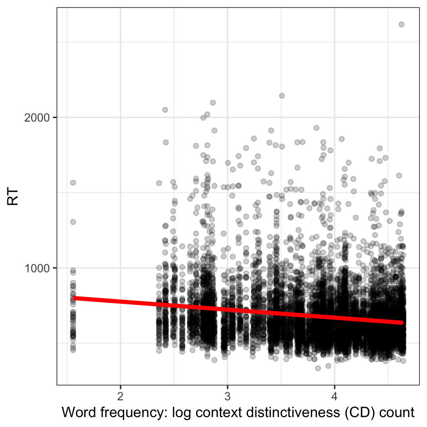
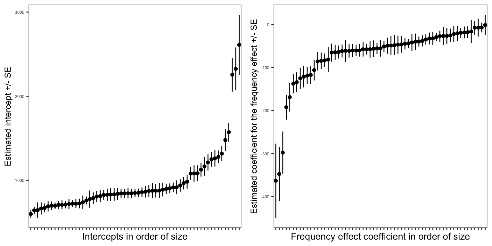
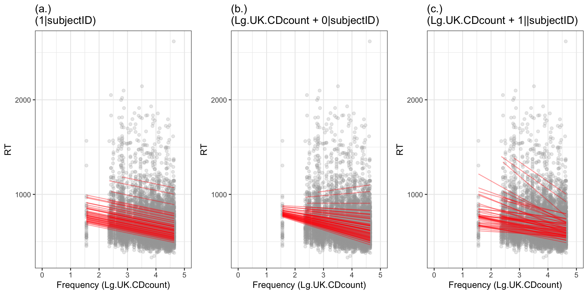

4 Introduction to linear mixed-effects models
4.1 Motivations: repeated measures designs and crossed random effects
In Chapter 3, we looked at a multilevel structured dataset in which there were observations about children’s grades, and it became evident that those children can be grouped by or under classes. As we discussed, this kind of data structure will come from studies with a very common design in which the researcher recorded observations about a sample of children who are members of a sample of classes. In working with these kind of data, it is common to say that the observations of children’s grades are nested within classes in a hierarchy.
Many Psychologists conduct studies where observations are properly understood to be structured in groups of some form but where, nevertheless, it is inappropriate to think of the observations as being nested (Baayen et al., 2008). We are talking, here, about repeated-measures designs where the experimenter presents a sample of multiple stimuli for response to each participant in a sample of for multiple participants. This is another very common experimental design in psychological science. Studies with this kind of design will produce data with a structure that, also, requires the use of mixed-effects models but, as we shall see, the way we think about the structure will be a bit more complicated. We could say that observations of the responses made by participants to each stimulus can be grouped by participant: each person will tend to respond in similar ways to different stimuli. Or, we could say that observations of responses can be grouped by stimulus because each stimulus will tend to evoke similar kinds of responses in different people. Or, we could say that both forms of grouping should be taken into account at the same time.
We shall take the third position and this chapter will concern why, and how we will adapt our thinking and practice.
4.2 The key idea to get us started
Linear mixed-effects models and multilevel models are basically the same.
This week, we again look at data with multilevel structure. But we are looking at data where participants were asked to respond to a set of stimuli (here, words) so that our observations consist of recordings made of the response made by each child to each stimulus. We use the same procedure we did for multilevel data but with one significant change which we shall identify and explain.
4.3 Targets
Our learning objectives again include the development of both concepts and skills.
- skills – practice how to tidy experimental data for mixed-effects analysis.
- concepts – begin to develop an understanding of crossed random effects of participants and stimuli.
- skills and concepts – practice fitting linear mixed-effects models incorporating random effects of participants and stimuli.
4.4 Study guide
I have provided a collection of materials you can use. Here, I explain what they are and how I suggest you use them.
1. Video recordings of lectures
1.1 I have recorded a lecture in three parts. The lectures should be accessible by anyone who has the link.
1.2 I suggest you watch the recordings then read the rest of this chapter. The lectures provide a summary of the main points.
2. Chapter: 02-mixed
2.1 I have written this chapter to discuss the main ideas and setting out the practical steps you can follow to start to develop the skills required to analyse multilevel structured data with crossed random effects. 2.2 The practical elements include data tidying, visualization and analysis steps. 2.3 You can read the chapter, run the code, and do the exercises.
- Read in the example CP reading study datasets.
- Identify how the data are structured by both participant and stimulus differences.
- Use visualizations to explore the impact of the structure.
- Run analyses using linear mixed-effects models involving multiple random effects.
- Review the recommended readings (Section 4.14.1).
3. Practical workbook materials
3.1 In the following sections, I describe the practical steps, and associated resources, you can use for your learning.
4.5 The data we will work with: CP reading study
In this chapter, we will be working with the CP reading study dataset. CP tested 62 children (aged 116-151 months) on reading aloud in English. In the experimental reading task, she presented 160 words as stimuli. The same 160 words were presented to all children. The words were presented one at a time on a computer screen. Each time a word was shown, each child had to read the word out loud and their response was recorded. Thus, the CP reading study dataset comprised observations about the responses made by 62 children to 160 words.
In addition to the reading task, CP administered tests of reading skill (TOWRE sight word and phonemic tests, Torgesen et al., 1999), reading experience (CART, Stainthorp, 1997), the Spoonerisms sub-test of the Phonological Awareness test Battery (Frederickson et al., 1997), and an orthographic choice test measure of orthographic knowledge (based on Olson et al., 1985). She also recorded the gender and the handedness of the children.
Ultimately, the CP dataset were incorporated in an analysis of the impact of age on reading skills over the life-span, reported by Davies et al. (2017). You can find more details on the data and the methods in that paper.
The CP study resembles many studies in psychological science. The critical features of the study are that:
- We have an outcome measure – the reading response – observed multiple times: for each participant, over many participants; and for each stimulus, over multiple stimuli.
- We have multiple responses recorded for each participant: they make one response to each stimulus, for multiple stimuli.
- And we have multiple responses recorded for each stimulus (here, each stimulus word): one response is made to each stimulus by each participant, for all participants in a sample of multiple participants.
The presence of these features is the reason why we need to use mixed-effects models in our analysis. These features are common across a range of study designs so the lessons we learn will apply frequently in psychological research. This is the reason why it is important we teach and learn how to use mixed-effects models.
4.5.1 Locate and download the data file
You can download the data-02-mixed.zip files folder to get the data you need for the practical work we will be doing for this chapter.
We will be working with multiple data files located in a .zip folder called data-02-mixed. In this folder, we have got four files that we will need to import or read in to R:
CP study word naming rt 180211.datCP study word naming acc 180211.datwords.items.5 120714 150916.csvall.subjects 110614-050316-290518.csv
The words.items file holds information about the 160 stimulus words presented in the experimental reading (word naming) task. The all.subjects file holds information about the 62 participants who volunteered to take part in the experiment. The other .dat files hold information about participant responses, as I explain shortly.
The .csv files are comma separated values files. The .dat files are tab delimited files holding behavioural data: the latency or reaction time rt (in milliseconds) and the accuracy acc of response made by each participant to each stimulus.
In the following, I will describe a series of steps through which we get the data ready for analysis. However, as we shall see, you can avoid these steps by using the pre-tidied dataset:
long.all.noNAs.csv
The data files are collected together with the .R scripts:
02-mixed-workbook.Rthe workbook you will need to do the practical exercises.02-mixed-workbook-answers.Rwith answers to questions and code for exercises.
Before we do anything else, we need to talk about the messiness of real Psychological data and how we deal with it.
4.6 The challenges of working with real (untidy) experimental data
Ordinarily, textbooks and guides to data analysis give you the data ready for analysis but this situation will never be true for your professional practice (at least, not at first). Instead of pretending that data arrive ready for analysis, we are going to look at the process of data tidying, step-by-step. This will help you to get ready for the same process when you have to develop and use it in your own research.
We are going to spend a bit of time looking at the data tidying process. This process involves identifying and resolving a series of challenges, in order. Looking at the tidying process will give you a concrete sense of the structure in the data. You should also take this opportunity to reflect on the nature of the process itself – what we have to do and why, in what order and why – so that you can develop a sense of the process you might need to build when the time comes for you to prepare your own data for analysis.
The time that we spend looking at data tidying is an investment in learning that will save you time later, in your professional work. If, however, you want to skip it, go to section Section 4.8.
4.6.1 The data we need to use for analysis are not all in the same file
In analyzing psychological data, the first step is usually to collect the data together. In psychological research, the data may exist, at first, in separate files. For the CP study, we have separate files for each of the pieces of information we need to use in our analyses:
- Participant attributes: information about participants’ age, gender, identifier code, and abilities on various measures.
- Stimulus attributes: information about stimulus items, e.g., the word, its item number, its value on each variable in a set of psycholinguistic properties (like word length, frequency).
- Behaviour: behavioural observations e.g. reaction time or accuracy of responses made by each participant to each stimulus word.
Often, we need all these kinds of information for our analyses but different pieces of information are produced in separate ways and come to us in separate files. For example, we may collect experimental response data using software like PsychoPy, E-Prime, Qualtrics or DMDX. We may collect information about participant characteristics using standardized measures, or by asking participants to complete a set of questions on their age, gender, and so on.
4.6.1.1 The data we need to use are untidy
Often, the files we get are untidy: not in a useful or tidy format. For example, if you open the file CP_study_word_naming_rt_180211.dat (a .dat or tab delimited file) in Excel, you will see a spreadsheet that looks like Figure 4.1.
Typical of the output from data collection software, we can see a data table with:
- in the top row, column header labels
item_name, AislingoC, AllanaD ...; - in the first (leftmost) column, row labels
item_name, act, ask, both ...; - for each row, we see values equal to the reaction time (RT) observed for the response made to each stimulus (listed in the row labels);
- for each column, we see values equal to the RTs observed for each person (listed in the column labels);
- and at each intersection of row and column (for each cell), we see the RT observed for a response made by a participant to a stimulus.
Data laid out like this are sometimes said to be in wide format. You can see that the data are wide because at least one variable – here, reading reaction time – is held not in one column but spread out over several columns, side-by-side. Thus, the dataset is wide with fewer rows and many columns.
We want the data in what is called the tidy format.
4.6.1.2 How tidy data are tidy
There are three inter-related rules which make data tidy (Grolemund & Wickham, 2019):
- Each variable must have its own column.
- Each observation must have its own row.
- Each value must have its own cell.
You can read more about tidy data here
For our purposes, the reason we want the data in tidy format is that it is required for the functions we are going to use for mixed-effects modelling. However, in general, tidy format is maximally flexible, and convenient, for use with different R functions.
4.7 Tidy the data
To answer our research question, we will need to combine the behavioural data with information about the participants (age, gender …) and about the words (word, frequency …) We will need to ensure that the data-set we construct will be in tidy format. We will need to select variables (columns) to get just those required for our later analyses. And we will need to filter cases (rows), excluding errors or outliers.
We shall need to do this work in a series of processing steps:
- Import the data or read the data into R, see Section 4.7.1
- Restructure the data, see Section 4.7.2
- Select or transform variables, see Section 4.7.4
- Filter observations, see Section 4.7.5
We will use tidyverse library functions from the beginning, starting with the import stage.
library(tidyverse)(Every step can also be done in alternative processing steps with the same result using base R code.)
4.7.1 Read in the data files by using the read_csv and read_tsv functions
I am going to assume you have downloaded the data files, that they are all in the same folder, and that you know where they are on your computer or server. We need to use different versions of the read_ function to read all four files into R.
behaviour.rt <- read_tsv("CP study word naming rt 180211.dat", na = "-999")
behaviour.acc <- read_tsv("CP study word naming acc 180211.dat", na = "-999")
subjects <- read_csv("all.subjects 110614-050316-290518.csv", na = "-999")
words <- read_csv("words.items.5 120714 150916.csv", na = "-999")These different versions respect the different ways in which the .dat and .csv file formats work. We need read_tsv() when data files consist of tab separated values. We need read_csv() when data files consist of comma separated values.
You can read more about the {tidyverse} readr library of helpful functions here
It is very common to get experimental data in all sorts of different formats. Learning to use tidyverse functions will make it easier to cope with this when you do research.
4.7.1.1 Code tip
Notice, here, that we use the read_ function to read in the data, entering two arguments inside the brackets after the function name. For example, we write the code as:
behaviour.rt <- read_tsv("CP study word naming rt 180211.dat", na = "-999")Take a look at what this line of code includes, element by element.
- We write
behaviour.rt <- read_tsv(...)to create an object in the R environment, which we callbehaviour.rt– the object with this name is the dataset we read into R usingread_tsv(...). - When we write the function
read_tsv(...)we include two arguments inside it. read_tsv("CP study word naming rt 180211.dat", ...first, the name of the file, given in quotes""and then a comma.read_tsv(..., na = "-999")second, we tell R that there are some missing valuesnawhich are coded with the value"-999".
4.7.1.2 A quick lesson about missing value codes
In R, a missing value is said to be “not available”: NA.
In the datasets – typically, the spreadsheets – we create in our research, we will have values missing for different reasons. Take another look at the data spreadsheet you saw earlier, Figure 4.1.
You should be able to see that the spreadsheet holds information, as explained, about the RTs of the responses made by each child to each stimulus word. Each of the cells in the spreadsheet (i.e. the box where a column intersects with a row) includes a number value. Most of the values are positive numbers like 751.3: the reaction time of a response, recorded in milliseconds. The values have to be positive because they represent the length of time between the moment the stimulus word is presented on the test computer screen and the moment the child’s spoken word response has begun to be registered by the computer microphone and sound recording software.
Some of the cells hold the value -999, however. Obviously, we cannot have negative RT. The value represents the fact that we have no data. Take a look at Figure 4.1: we have a -999 where we should have a RT for the response made by participant AllanaD to the word broad. This -999 is there because, for some reason, we did not record an RT or a response for that combination of participant and stimulus.
We can choose any value we like, as researchers, to code for missing data like this. Some researchers choose not to code for the absence of a response recording or leave the cell in a spreadsheet blank or empty where data are missing. This is bad practice though it is common.
There are a number of reasons why it is bad practice to just leave a cell empty when it is empty because no observation is to be recorded.
- Data may be missing for different reasons: maybe a child did not make any response to a stimulus (often called a “null response”); or maybe a child made a response but there was a microphone or other technical fault; or maybe a child made a response but it was an error and (here) the corresponding performance measure (RT) cannot be counted.
- If you do not code for missingness in the data then the software you use will do it for you, but you may not know how it does so, or where.
- If you have missing data, you ought to be able to identify where the data are missing.
I use -999 to code for missing values because you should never see a value like that in real reading RT data. You can use whatever value you like but you should make sure you do code for missing data somehow.
4.7.2 Reshape the data from wide to long using the gather() function
We are going to need to restructure these data from a wide format to a longer format. We need to restructure both behavioural data-sets, accuracy and RT. We do this using the pivot_longer() function.
rt.long <- behaviour.rt %>%
pivot_longer(2:62, names_to = "subjectID", values_to = "RT")
acc.long <- behaviour.acc %>%
pivot_longer(2:62, names_to = "subjectID", values_to = "accuracy")Doing data-set construction programmatically, using R functions, is generally more reliable, and faster, than doing it by hand. Researchers used to have to do this sort of thing by hand, using copying and pasting, in Excel or SPSS. Doing the process by hand takes many hours or days. And you always make errors.
4.7.2.1 Code tip
Here, we use a function you may not have seen before: pivot_longer().
rt.long <- behaviour.rt %>%
pivot_longer(2:62, names_to = "subjectID", values_to = "RT")The name of the function comes from the fact that we are starting with data in wide format e.g. behaviour.rt where we have what should be a single variable of observations (RTs) arranged in a wide series of multiple columns, side-by-side (one column for each participant). But we want to take those wide data and lengthen the dataset, increasing the number of rows and decreasing the number of columns.
Let’s look at this line of code bit by bit. It includes a powerful function that accomplishes a lot of tasks, so it is worth explaining this function in some detail.
rt.long <- behaviour.rt %>%
- At the start, I tell R that I am going to create a new longer dataset (more rows, fewer columns) that I shall call
rt.long. - I will create this longer dataset from
<-the original wide datasetbehaviour.rt. - and I will create the new longer dataset by taking the original wide dataset and piping it
%>%to the pivot function coded on the next line:
pivot_longer(2:62, names_to = "subjectID", values_to = "RT")
- On this next line, I tell R how to do the pivoting by using three arguments.
pivot_longer(2:62...)
- First, I tell R that I want to re-arrange all the columns that can be found in the dataset from the second column to the sixty-second column.
- In a spreadsheet, we have a number of columns.
- Columns can be identified by their position in the spreadsheet.
- The position of a column in a spreadsheet can be identified by number, from the leftmost column (column number 1) to the rightmost column (here, column number 62) in our dataset.
- So this argument tells R exactly which columns I want to pivot.
pivot_longer(..., names_to = "subjectID", ...)
- Second, I tell R that I want it to take the column labels and put them into a new column, called
subjectID. - In the wide dataset
behaviour.rt, each column holds a list of numbers (RTs) but begins with a word in the topmost cell, the name code for a participant, in the column label position. - We want to keep the information about which participant produces which response when we pivot the wide data to a longer structure.
- We do this by asking R to take the column labels (the participant names) and listing them in a new column, called
subjectIDwhich now holds the names as participant ID codes.
pivot_longer(...values_to = "RT")
- Third, we tell R that all the RT values should be put in a single column.
- We can understand that this new column
RTwill hold RT observations in a vertical stack, one cell for each response by a person to a word, with rows ordered bysubjectID.
There are 61 columns of data listed by participant though 62 children were tested because we lost one child’s data through an administrative error. As a result, in the wide data sets there are 62 columns, with the first column holding item_name data.
You can find more information about pivoting data here
And you can find more information specifically about the pivot_longer() operation here
4.7.2.1.1 Why we restructure the data
As I noted, one problem with the wide format is that the data are structured so that the column names are not names of variables. In our example wide format dataset behaviour.rt, the columns are headed by a participant identity code or name but a participant code is not the name of a variable, it is a value of the variable I call subjectID. In the design of the CP reading study, we want to take into account the impact of differences between participants on response RT (so, we need to identify which participant makes which response). But we do not see the responses made by a participant as a predictor variable.
A second problem is that, in a wide format file like behaviour.rt, information about the responses made to each stimulus word is all on the same row (that seems good) but in different columns. Each person responded to all the words. But the response made to a word e.g. act made by one participant is in a different column (e.g., 594.8ms, for AislingoC) from the response made to the same word by a different participant (e.g., 586ms, for AlexB). This means that information about the responses made to each stimulus word are spread out as values across multiple columns.
You can see this for yourself if you inspect the source data using head().
head(behaviour.rt)
head(behaviour.acc)This structure is a problem for visualization and for analysis because the functions we will use require us to specify single columns for an outcome variable like reaction time.
We are looking at the process of tidying data because untidiness is very common. Learning how to deal with it will save you a lot of time and grief later.
You should check for yourself how subjectID and RT or accuracy scores get transposed from the old structure to the new structure.
head(rt.long)
head(acc.long)If you compare the rt.long or acc.long data with what you see in when the data are in the original wide format then you can see how – in going from wide – we have re-arranged the data to a longer and narrower set of columns, one column listing each word, one column for subjectID and one column for RT or accuracy. What a check will show you is that we have multiple rows for responses to each item so that the item is repeated multiple times in different rows.
These data are now tidy.
- Each column has information about one variable
- And each row has information about one observation, here, the response made by a participant to a word
But these data are incomplete. Next we shall combine behavioural observations with data about stimulus words and about participants.
4.7.2.1.2 The tidyverse evolves
Over the years, different ways of reshaping data have evolved. This reflects how important and common the task is. An older way to do the same operation uses the function gather().
You can read more about gather() here
In tidyverse the functions designed to enable you to restructure data have evolved through a series of different forms. This change is one of the real benefits of using open software like R. In my experience, the newer functions can be useful for really untidy data. I expect things will continue to evolve and improve over time.
4.7.3 Merging data from different data-sets using _join()
To answer our research question, we next need to combine the RT with the accuracy data, and then the combined behavioural data with participant information and stimulus information. This is because, as we have seen, information about behavioural responses, about participant attributes or stimulus word properties, are located in separate files.
Many researchers have completed this kind of operation by hand. This involves copying and pasting bits of data in a spreadsheet. It can take hours or days. I know because I have done it, and I have seen others do it. Please don’t. There are better ways to spend your time. And you will make mistakes that you will not then be able to identify.
We can combine the datasets, in the way that we need, using the tidyverse full_join() function. This gets the job done quickly, and accurately.
First, we join RT and accuracy data together.
long <- rt.long %>%
full_join(acc.long)Then, we join subject and item information to the behavioural data.
long.subjects <- long %>%
full_join(subjects, by = "subjectID")
long.all <- long.subjects %>%
full_join(words, by = "item_name")Notice, we can let R figure out how to join the pieces of data together. If we were doing this by hand then we would need to check very carefully the correspondences between observations in different datasets.
4.7.3.1 Code tip
Here, in a series of steps, we take one dataset and join it (merge it) with the second dataset. Let’s look at an example.
long <- rt.long %>%
full_join(acc.long)The code work as follows.
long <- rt.long %>%
- We create a new dataset we call
long. - We do this by taking one original dataset
rt.longand%>%piping it to the operation defined in the second step.
full_join(acc.long)
- In this second step, we use the function
full_join()to add observations from a second original datasetacc.longto those already fromrt.long
The addition of observations from one database joining to those from another happens through a matching process.
- R looks at the datasets being merged.
- It identifies if the two datasets have columns in common. Here, the datasets have
subjectIDanditem_namein common). - R can use these common columns to identify rows of data. Here, each row of data will be identified by both
subjectIDanditem_namei.e. as data about the response made by a participant to a word. - R will then do a series of identity checks, comparing one dataset with the other and, row by row, looking for matching values in the common columns.
- If there is a match then R joins the corresponding rows of data together.
- If there isn’t a match then it creates
NAswhere there are missing entries in one row for one dataset which cannot be matched to a row from the joining dataset.
Note that in one example, the example of code I discuss here, I did not specify identifying columns in common, allowing the function to do the work. In the other code chunks I did: long.all <- long.subjects %>% full_join(words, by = "item_name") using the by = ... argument.
4.7.3.2 Relational data
In the tidyverse family of dplyr functions, when you work with multiple datasets (tables of data), we call the datasets relational data.
There are three families of verbs designed to work with relational data:
- Mutating joins, which add new variables to one data frame from matching observations in another.
- Filtering joins, which filter observations from one data frame based on whether or not they match an observation in the other table.
- Set operations, which treat observations as if they were set elements.
We can connect datasets – relate them – according to shared variables like subjectID, item_name (for our data). In tidyverse, the variables that connect pairs of tables are called keys where, and this is what counts, key(-s) are variable(-s) that uniquely identify an observation.
For the experimental reading data, we have observations about each response made by a participant (one of 61 subjects) to an item (one of 160 words). For these data, we can match up a pair of RT and accuracy observations for each (unique) subjectID-item_name combination.
If you reflect, we could not combine the RT and accuracy data correctly:
- If we did not have both identifying variables for both datasets, both required to uniquely identify each observation.
- If there were mismatches in values of the identifying variable.
Sometimes, I have done this operation and it has gone wrong because a subjectID has been spelled one way in one dataset e.g. hugh and another way in the other dataset e.g. HughH. This means I am careful about spelling identifiers and I always check my work after merger operations, calculating dataset lengths to ensure the number of rows in the new dataset matches my expectations.
4.7.3.3 _join functions
We used the full_join() function.
There are three kinds of joins.
- A left join keeps all observations in x.
- A right join keeps all observations in y.
- A full join keeps all observations in x and y.
I used full_join() because I wanted to retain all observations from both datasets, whether there was a match (as assumed) or not, in the identifying variables, between observations in each dataset.
4.7.3.4 Exercise
- Break the join: You could examine how the
full_join()works by experimenting with stopping it from working
As I discuss, you need to have matches in values on key (common) variables. If the subjectID is different on different datasets, you will lose data that would otherwise be merged to form the merged or composite dataset. So, check what happens if you deliberately mis-spell one of the subjectID values in one of the original source wide behavioural data files.
To be safe, you might want to do this exercise with copies of the source files kept in a folder you create for this purpose. If it goes wrong, you can always re-access the source files and read them in again.
You can check what happens before and after you break the match by counting the number of rows in the dataset that results from the merger. We can count the number of rows in a dataset with:
length(long.all$RT)[1] 9762This bit of code takes the length of the vector (i.e. variable column RT in dataset long.all), thus counting the number of rows in the dataset.
4.7.4 Select or transform the variables
OK, now we have all the data about everything all in one big, long and wide, dataset. But we do not actually need all this stuff. We next need to do two things. First, we need to get rid of variables we will not use: we do that by using select(). Then, we need to remove errors and outlying short RT observations: we do that by using filter() in Section @ref(filter).
We are going to select just the variables we need using the select() function.
long.all.select <- long.all %>%
select(item_name, subjectID, RT, accuracy,
Lg.UK.CDcount, brookesIMG, AoA_Kup_lem,
Ortho_N, regularity, Length, BG_Mean,
Voice, Nasal, Fricative, Liquid_SV,
Bilabials, Labiodentals, Alveolars,
Palatals, Velars, Glottals, age.months,
TOWREW_skill, TOWRENW_skill, spoonerisms, CART_score)Notice that these variables do not have reader-friendly names. Naming things well is important, as Jenny Bryan teaches.
I would say that this true for variables as much as for files. The names we have in the CP study data were fine for internal use within my research group but we should be careful to ensure that variables have names that make sense to others and to our future selves. We can adjust variable names using the rename() function but I will leave that as an exercise for you to do.
4.7.4.1 Exercise
- Select different variables: You could analyze the CP study data for a research report. What if you wanted to analyze a different set of variables, could you select different variables?
4.7.5 Filter observations
We now have a tidy dataset long.all.select with 26 columns and 9762 rows.
The dataset includes missing values, designated NA for not available (to you). Here, every error (coded 0, in accuracy) corresponds to an NA in the RT column.
The dataset also includes outlier data. In this context, \(RT < 200\) are probably response errors or equipment failures. We will want to analyse accuracy later, so we shall need to be careful about getting rid of NAs.
At this point, I am going to exclude two sets of observations only.
- observations corresponding to correct response reaction times that are too short: \(RT < 200\).
- plus observations corresponding to the word false which (because of stupid Excel auto-formatting) dropped item attribute data.
We can do this using the filter() function, setting conditions on rows, as arguments.
# step 1
long.all.select.filter <- long.all.select %>%
filter(item_name != 'FALSE')
# step 2
long.all.select.filter <- long.all.select.filter %>%
filter(RT >= 200)4.7.5.1 Code tip
Here, I am using the function filter() to …
- Create a new dataset
long.all.select.filter <- ...by - Using functions to work on the data named immediately to the right of the assignment arrow:
long.all.select - An observation is included in the new dataset if it matches the condition specified as an argument in the
filter()function call, thus:
filter(item_name !=FALSE’)means: include in the new datasetlong.all.select.filterall observations from the old datasetlong.all.selectthat are not!=(!not=equal to) the valueFALSEin the variableitem_name`- then recreate the
long.all.select.filteras a version of itself (with no name change) by including in the new version only those observations where RT was greater than or equal to 200ms usingRT >= 200
4.7.5.2 The difference between = and ==
You need to be careful to distinguish these signs.
=assigns a value, sox = 2means “x equals 2”==tests a match sox == 2means: “is x equal to 2?”
4.7.5.3 Using multiple arguments in filtering
You can supply multiple arguments to filter() and this may be helpful if (1.) you want to filter observations according to a match on condition-A and condition-B (logical “and” is coded with &) or (2.) you want to filter observations according to a match on condition-A or condition-B (logical “or” is coded |).
You can read more about using multiple arguments to filter observations here
4.7.5.4 Exercise
- Vary the filter conditions: in different ways
- Change the threshold for including RTs from
RT >= 200to something else - Can you assess what impact the change has? Note that you can count the number of observations (rows) in a dataset using e.g.
length(data.set.name$variable.name)
Filtering or re-coding observations is an important element of the research workflow in psychological science. How we do or do not remove observations from original data may have an impact on our results (as explored by, e.g., Steegen et al., 2014). It is important, therefore, that we learn how to do this reproducibly using R scripts that we can share with our research reports.
You can read further information about filtering here
4.7.5.5 Remove missing values
We will be working with the long.all.select.filter.csv dataset collated from the experimental, subject ability scores, and item property data collected for the CP word naming study.
For convenience, I am going to remove missing values before we go any further, using the na.omit() function.
long.all.noNAs <- na.omit(long.all.select.filter)4.7.5.6 Code tip
The na.omit() function is powerful. In using this function, I am asking R to create a new dataset long.all.noNAs from the old dataset long.all.select.filter in a process in which the new dataset will have no rows in which there is a missing value NA in any column. You need to be reasonably sure, when you use this function, where your NAs may be because, otherwise, you may end the process with a new filtered dataset that has many fewer rows in it than you expected.
4.7.6 Now we have some tidy data
head(long.all.noNAs, n = 10)# A tibble: 10 × 26
item_n…¹ subje…² RT accur…³ Lg.UK…⁴ brook…⁵ AoA_K…⁶ Ortho_N regul…⁷ Length
<chr> <chr> <dbl> <dbl> <dbl> <dbl> <dbl> <dbl> <dbl> <dbl>
1 act Aislin… 595. 1 4.03 4 6.42 5 1 3
2 act AlexB 586 1 4.03 4 6.42 5 1 3
3 act AmyR 693 1 4.03 4 6.42 5 1 3
4 act AndyD 597 1 4.03 4 6.42 5 1 3
5 act AnnaF 627 1 4.03 4 6.42 5 1 3
6 act AoifeH 649 1 4.03 4 6.42 5 1 3
7 act ChloeB… 1081 1 4.03 4 6.42 5 1 3
8 act ChloeF 642 1 4.03 4 6.42 5 1 3
9 act ChloeS 623. 1 4.03 4 6.42 5 1 3
10 act CianR 701 1 4.03 4 6.42 5 1 3
# … with 16 more variables: BG_Mean <dbl>, Voice <dbl>, Nasal <dbl>,
# Fricative <dbl>, Liquid_SV <dbl>, Bilabials <dbl>, Labiodentals <dbl>,
# Alveolars <dbl>, Palatals <dbl>, Velars <dbl>, Glottals <dbl>,
# age.months <dbl>, TOWREW_skill <dbl>, TOWRENW_skill <dbl>,
# spoonerisms <dbl>, CART_score <dbl>, and abbreviated variable names
# ¹item_name, ²subjectID, ³accuracy, ⁴Lg.UK.CDcount, ⁵brookesIMG,
# ⁶AoA_Kup_lem, ⁷regularityIf we inspect the data-set, we can see that we have now got a tidy data-set with all the data we need for our analyses:
- One observation per row, corresponding to data about a response made by a participant to a stimulus in an experimental trial
- One variable per column
- We have information about the speed and accuracy of responses
- And we have information about the children and about the words.
We have removed the missing values and we have filtered outliers.
4.7.7 We can output the data as a .csv file
Having produced the tidy dataset, we may wish to share it, or save ourselves the trouble of going through the process again. We can do this by creating a .csv file.
write_csv(long.all.noNAs, "long.all.noNAs.csv")This function will create a .csv file from the dataset you name long.all.noNAs which R will put in your working directory.
4.7.8 Data tidying – conclusions
Most research work involving quantitative evidence requires a big chunk of data tidying or other processing before you get to the statistics. Most of the time, this is work you will have to do. The lessons you can learn about the process will generalize to many future research scenarios.
4.8 Repeated measures designs and crossed random effects
Our focus this week is on analyzing data that come from studies with repeated-measures designs where the experimenter presents multiple stimuli for response to each participant. In our working example, the CP reading study, CP asked all participants in her study to read a selection of words. All participants read the same selection of words, and every person read every word. For each participant, we have multiple observations and these (within-participant) observations will not be independent of each other. One participant will tend to be slower or less accurate compared to another participant, on average. Likewise, one participant’s responses will reveal a stronger (or weaker) impact of the effect of an experimental variable than another participant. These between-participant differences will tend to be apparent for each set of observations we have for each participant, across the sample of participants.
You could say that the lowest trial-level observations can be grouped with respect to participants, that observations are nested within participant. But the data can also be grouped by stimuli. Remember that in the CP study, all participants read the same selection of words, and every person read every word. This means that for each stimulus word, there are multiple observations because all participants responded to each word, and these (within-item) observations will not be independent of each other. One word may prove to be more challenging compared to another, eliciting slower or less accurate responses, on average. Likewise, participants’ responses to a word will reveal a stronger (or weaker) impact of the effect of an experimental variable than the responses to another word. Again, these between-stimulus differences will tend to be apparent for each set of observations we have for each stimulus word, across the sample of words.
Under these circumstances, are observations about the responses made by different participants nested under words or are observations about the responses to different words nested under participants? We do not have to make a decision.
Given this common repeated-measures design, we can analyze the outcome variable in relation to:
- fixed effects: the impact of independent variables like participant reading skill or word frequency
- random effects: the impact of random or unexplained differences between participants and also between stimuli
In this situation, we can say that the random effects are crossed (Baayen et al., 2008). When multilevel models require the specification of crossed random effects, they tend to be called mixed-effects models.
4.9 Working with mixed-effects models
To illustrate the approach, we examine observations from the CP study. We begin, as we did previously, by ignoring differences due to grouping variables (like participant or stimulus). We pretend that all observations are independent. In this fantasy situation, we address our research question.
4.9.1 Our research question
We are going to use the CP study data to examine the answers to the question:
- Research question: What word properties influence responses to words in a test of reading aloud?
We can look at the answers to this question while also taking into account the impacts of random differences – between sampled participants or between sampled words – using mixed-effects models.
4.9.2 Load the data if you need to
If you did not go through the process of tidying the CP study data from the component source data files, then you can import the pre-tidied data here.
long.all.noNAs <- read_csv("long.all.noNAs.csv",
col_types = cols(
subjectID = col_factor(),
item_name = col_factor()
)
) 4.9.2.1 Code tip
Notice that I am using read_csv() with an additional argument col_types = cols(...) through which I control how read_csv() processes specific column variables in the data. Here, I am requesting that read_csv() treats subjectID and item_name as factors.
This is a very useful capacity, and a more efficient way to work than, say, first reading in the data and then using coercion to ensure that variabels are assigned appropriate types. You can read more about it here.
4.9.3 Linear model for multilevel data – ignoring the hierarchical structure
We begin by asking if reading reaction time (RT) varies in association with word frequency. A scatterplot shows that response latencies decrease with increasing word frequency (Figure 4.2).
long.all.noNAs %>%
ggplot(aes(x = Lg.UK.CDcount, y = RT)) +
geom_point(alpha = .2) +
geom_smooth(method = "lm", se = FALSE, size = 1.5, colour="red") +
theme_bw() +
xlab("Word frequency: log context distinctiveness (CD) count")
In the plot, we see that the best fit line drawn with geom_smooth() trends downward for higher values of word frequency. This means that Figure @ref(fig:pfreqc5) suggests that RT decreases with increasing word frequency. (I know there is a weird looking line of points around 0 but we can ignore that here.)
We can estimate the relationship between RT and word frequency using a linear model in which we ignore the possibility that there may be differences (between subjects, or between items) in the intercept or (between subjects) in the slope of the frequency effect:
\[ Y_{ij} = \beta_0 + \beta_1X_j + e_{ij} \]
- where \(Y_{ij}\) is the value of the observed outcome variable, the RT of the response made by the \(i\) participant to the \(j\) word;
- \(\beta_1X_j\) refers to the fixed effect of the explanatory variable (here, word frequency), where the frequency value \(X_j\) is different for different words \(j\), and \(\beta_1\) is the estimated coefficient of the effect due to the relationship between response RT and word frequency;
- \(e_{ij}\) is the residual error term, representing the differences between observed \(Y_{ij}\) and predicted values (given the model).
The linear model can be fit in R using the lm() function, as we have done previously.
# label: lm-all-freq
lm.all.1 <- lm(RT ~ Lg.UK.CDcount,
data = long.all.noNAs)
summary(lm.all.1)
Call:
lm(formula = RT ~ Lg.UK.CDcount, data = long.all.noNAs)
Residuals:
Min 1Q Median 3Q Max
-346.62 -116.03 -38.37 62.05 1981.58
Coefficients:
Estimate Std. Error t value Pr(>|t|)
(Intercept) 882.983 11.901 74.19 <2e-16 ***
Lg.UK.CDcount -53.375 3.067 -17.40 <2e-16 ***
---
Signif. codes: 0 '***' 0.001 '**' 0.01 '*' 0.05 '.' 0.1 ' ' 1
Residual standard error: 185.9 on 9083 degrees of freedom
Multiple R-squared: 0.03227, Adjusted R-squared: 0.03216
F-statistic: 302.8 on 1 and 9083 DF, p-value: < 2.2e-16We can see that, in this first analysis, the estimated effect of word frequency is \(\beta = -53.375\) (here, word frequency information is in the Lg.UK.CDcount variable). This means that, in the linear model, RT decreases by about 54 milliseconds for each unit increase in log word frequency. (In our analyses, in common with many in the reading literature, we transformed the frequency estimate to the Log base 10 of the frequency of occurrence estimated for each word.) The model does not explain much variance, as \(R^2 = .03\) but, no doubt due to the large sample, the regression model is overall significant \(F(1,9083) = 302.8, p < .001\).
4.9.3.1 Exercise
- Vary the linear model: using different outcomes or predictors
The CP study dataset is rich with possibility. It would be useful to experiment with it.
- Change the predictor from frequency to something else: what do you see when you visualize the relationship between variables using scatterplots?
- Specify linear models with different predictors: do the relationships you see in plots match the coefficients you see in the model estimates?
4.9.4 Can we ignore the hierarchical structure?
In this linear model, the observations are assumed to be independent but the assumption of independence is questionable given the expectation that participants will differ, with one participant’s responses perhaps slower or less accurate than another, perhaps more or less affected by word frequency than another. We can examine that variation by estimating the intercept and the slope of the frequency effect separately using the data for each participant alone.
We can start by examining the frequency effect for each child in a grid of plots, with each plot representing the \(RT \sim frequency\) relationship for the data for a child (Figure 4.3).
We discussed how the plotting code functions in the previous chapter.
long.all.noNAs %>%
ggplot(aes(x = Lg.UK.CDcount, y = RT)) +
geom_point(alpha = .2) +
geom_smooth(method = "lm", se = FALSE, size = 1.25, colour = "red") +
theme_bw() +
xlab("Word frequency (log10 UK SUBTLEX CD count)") +
facet_wrap(~ subjectID)Figure 4.3 shows how, on average, more frequent words are associated with shorter reaction time, faster responses. The plot further shows, however, that the effect of frequency varies considerably between children. Some children show little or no effect; the best fit line is practically level. Other children show a marked effect, with a steep fit line indicating a strong frequency effect.
We can get more insight into the differences between children, however, if we plot the estimated intercept and frequency effect coefficients for each child directly. This allows more insight because it focuses the eye on the differences between children in the estimates.
Figure 4.4 presents a plot showing the estimates of the intercept and the coefficient of the effect of word frequency on reading RT, calculated separately for each child. The estimate for each child is shown as a black dot. The standard error of the estimate is shown as a black vertical line, shown above and below a point. You can say that where there is a longer line there we have more uncertainty about the location of the estimate.
Figure 4.4 presents the estimates of intercept and the frequency coefficient, calculated for each child, ordered by the size of the estimate. Drawn this way, we can see how the estimates of both the intercept and the slope of the frequency effect vary substantially between children. We can see also how the standard errors vary greatly between children.
Notice that if there is an average intercept for everyone in the sample or, better, an intercept we could estimate for everyone in the population, then the different intercepts we have estimated for each child would be distributed around that population-level average. Some children will have slower (here, larger) intercepts and other children will have faster (shorter) intercepts. (Here, the intercept can be taken to be the average RT when all other effects in the model are set to zero. RT varies for this sample around somewhere like \(\beta_0 = 883ms\) so a slower larger intercept might be e.g. \(\beta_0 = 1000ms\).)
In the same way, if there is an average slope for the frequency effect, an effect of frequency on reading RT, averaged across everyone in the population, then, again, the different slopes we have estimated for each child would be distributed around that population-level effect. Some children will have larger (here, more negative) frequency effects and other children will have smaller (less negative) frequency effects. (Here, the frequency effect is associated with a negative coefficient e.g. \(\beta_1 = -53\) so a larger frequency effect will be a bigger negative number e.g. \(\beta_1 = -100\).)
freqperchildlm <- long.all.noNAs %>%
group_by(subjectID) %>%
do(tidy(lm(RT ~ Lg.UK.CDcount, data=.)))
freqperchildlm$term <- as.factor(freqperchildlm$term)
freqperchildlmint <- filter(freqperchildlm, term == '(Intercept)')
freqperchildlmfreq <- filter(freqperchildlm, term == 'Lg.UK.CDcount')
pfreqperchildlmint <- freqperchildlmint %>%
ggplot(aes(x = fct_reorder(subjectID, estimate), y = estimate, ymin = estimate - std.error, ymax = estimate + std.error)) +
geom_point() + geom_linerange() +
theme_bw() +
xlab("Intercepts in order of size") +
ylab("Estimated intercept +/- SE") +
theme(axis.title.y = element_text(size = 10), axis.text.y = element_text(size = 5), axis.text.x = element_blank(), panel.grid = element_blank())
pfreqperchildlmfreq <- freqperchildlmfreq %>%
ggplot(aes(x = fct_reorder(subjectID, estimate), y = estimate, ymin = estimate - std.error, ymax = estimate + std.error)) +
geom_point() + geom_linerange() +
theme_bw() +
xlab("Frequency effect coefficient in order of size") +
ylab("Estimated coefficient for the frequency effect +/- SE") +
theme(axis.title.y = element_text(size = 10), axis.text.y = element_text(size = 5), axis.text.x = element_blank(), panel.grid = element_blank())
grid.arrange(pfreqperchildlmint, pfreqperchildlmfreq,
ncol = 2) 
4.9.5 Multilevel – here, more appropriately known as – mixed-effects models
In a mixed-effects model, we account for this variation: the differences between participants in intercepts and slopes. We do this by modeling the intercept as two terms:
\[ \beta_{0i} = \gamma_0 + U_{0i} \]
- where \(\gamma_0\) is the average intercept and \(U_{0i}\) is the difference for each \(i\) child between their intercept and the average intercept.
We model the frequency effect as two terms:
\[ \beta_{1i} = \gamma_1 + U_{1i} \]
- where \(\gamma_1\) is the average slope and \(U_{1i}\) represents the difference for each \(i\) child between the slope of their frequency effect and the average slope.
We can then incorporate in a single model the fixed effects due to the average intercept and the average frequency effect, as well as the random effects, error variance due to unexplained differences between participants in intercepts and frequency effects:
\[ Y_{ij} = \gamma_0 + \gamma_1X_j + U_{0i}+ U_{1i}X_j + e_{ij} \]
- where the outcome \(Y_{ij}\) is related to …
- the average intercept \(\gamma_0\) and differences between \(i\) children in the intercept \(U_{0i}\);
- the average effect of the explanatory variable frequency \(\gamma_1X_j\) and differences between \(i\) participants in the slope \(U_{1i}X_j\);
- in addition to residual error variance \(e_{ij}\).
4.9.5.1 What are we doing with these random effects terms?
Note that in sections @ref(BLUPS) and @ref(variance-covariance), we look at what exactly is captured in these random effects terms \(U_{0i}, U_{1i}\). Let’s first look at the practicalities of analysis then come back to deepen our understanding a bit more.
Right now, it is important to understand that in our analysis we do not care about the differences between specific children. We care that there are differences. And we care how widely spread are the differences between child A and the average intercept (or slope), or between child B and the average intercept (or slope), or between child C … (you get the idea). Therefore, in our analysis, we estimate the spread of the differences as a variance term. We can see this when we look at the results of the mixed-effects model we specify, next.
4.9.5.2 Fitting a mixed-effect model using the lmer() function
We can fit a mixed-effects model of the \(RT \sim frequency\) relationship, taking into account the random differences between participants. I first go through the model fitting code bit by bit. (I then go through the output, the results.)
lmer.all.1 <- lmer(RT ~ Lg.UK.CDcount + (Lg.UK.CDcount + 1||subjectID),
data = long.all.noNAs)
summary(lmer.all.1)You have seen the lmer() function code before but practice makes perfect so we shall go through the code step by step, as we did previously. This time, notice what is different versus what stays the same.
First, we have a chunk of code mostly similar to what we do when we do a regression analysis.
lmer.all.1 <- lmer(...)creates a linear mixed-effects model object using thelmer()function.RT ~ Lg.UK.CDcountis a formula expressing the model in which we estimate the fixed effect on the outcome or dependent variableRT(reaction time, in milliseconds) predicted \(\sim\) by the independent or predictor variableLg.UK.CDcount(word frequency)....(..., data = long.all.noNAs)specifies the dataset in which you can find the variables named in the model fitting code.summary(lmer.all.1)gets a summary of the fitted model object, showing you the results.
Second, we have the bit that is specific to multilevel or mixed-effects models.
- We add
(...||subjectID)to tell R about the random effects corresponding to random differences between sample groups (here, observations grouped by child) that are coded by thesubjectIDvariable. (...1 ||subjectID)says that we want to estimate random differences between sample groups (observations by child) in intercepts, where the intercept is coded by1.(Lg.UK.CDcount... ||subjectID)adds random differences between sample groups (observations by child) in slopes of the frequency effect coded using theLg.UK.CDcountvariable name.
4.9.5.2.1 What does || mean?
I want you to notice something that looks like nothing much: ||. We are going to need to defer until later a (necessary) discussion of exactly why we need the two double lines. In short, the use of || asks R to fit a model in which we estimate random effects associated with
- nvariance due to differences in intercepts
- variance due to differences in slopes
- but not covariance between the two sets of differences
I do this because otherwise the model I specify will not converge. We shall need to discuss these things: convergence, and failures to converge; as well as random effects specification and simplification. We will discuss random effects covariance in Section 4.11. For now, the most important lesson is learnt by seeing how the analysis approach we saw last week can be extended to examining the effects of experimental variables in data from repeated measures design studies.
4.9.5.3 Reading the lmer() results
The lmer() model code we discussed in Section 4.9.5.2 gives us the following output.
Linear mixed model fit by REML ['lmerMod']
Formula: RT ~ Lg.UK.CDcount + ((1 | subjectID) + (0 + Lg.UK.CDcount |
subjectID))
Data: long.all.noNAs
REML criterion at convergence: 117805.3
Scaled residuals:
Min 1Q Median 3Q Max
-3.7839 -0.5568 -0.1659 0.3040 12.4850
Random effects:
Groups Name Variance Std.Dev.
subjectID (Intercept) 87575 295.93
subjectID.1 Lg.UK.CDcount 2657 51.55
Residual 23734 154.06
Number of obs: 9085, groups: subjectID, 61
Fixed effects:
Estimate Std. Error t value
(Intercept) 950.913 39.216 24.248
Lg.UK.CDcount -67.980 7.092 -9.586
Correlation of Fixed Effects:
(Intr)
Lg.UK.CDcnt -0.093We discussed the major elements of the results output last week. We expand on that discussion, a little, here.
- First, we see information about the function used to fit the model, and the model object created by the
lmer()function call - Then, we see the model formula
RT ~ Lg.UK.CDcount + (Lg.UK.CDcount + 1|subjectID) - Then, we see
REML criterion at convergenceabout the model fitting process, which we can usually ignore - Then, we see information about the distribution of the model residuals.
This is where you can see information about the error variance terms estimated by the model.
The information is listed in four columns: 1. Groups; 2. Name; 3. Variance; and 4. Std.Dev. You will recall that we have talked about how observations can be grouped by participant (because we have multiple response observations for each person in the study) just as previously we talked about how observations could be grouped by class (because we saw that children were nested under class). That is what we mean when we refer to Groups, we are identifying the grouping variables that give hierarchical structure to the data. The Name lists whether the estimate we are looking at corresponds to, here, random differences between participants in intercepts (listed as (Intercept)), or in slopes (listed as Lg.UK.CDcount). As we discuss later, in Section 4.11, mixed-effects models estimate the spread in random differences. We are not interested in the specific differences in intercept or slope between specific individuals. What we want is to be able to take into account the variance associated with those differences.
Thus, we see in the Random Effects section, the variances associated with:
subjectID Intercept) 87575, differences between participants in the intercepts;subjectID.1 Lg.UK.CDcount 2657, differences between participants in the slopes of the frequency effect;- Alongside
Residual 23734, residuals where, just like a linear model, we have variance associated with differences between model estimates and observed RT, here, at the trial level.
We do not usually discuss the specific variance estimates in research reports. However, the relative size of the variances does provide useful information (see also Meteyard & Davies, 2020), as we shall see when we discuss the different estimates we get when we include a random effect due to differences between items (Section @ref(random-effect-items)).
In this model, we see estimates of the fixed effects of the intercept and the slope of the RT ~ Lg.UK.CDcount model. We discuss these estimates next.
4.9.6 Is there a difference between linear model and linear mixed-effects model results?
Recall that the linear model yields the estimate for the frequency effect on reading RT such that RT decreases by about 53 ms for unit increase in log word frequency (\(\beta = -53.375\)). Now, when we have taken random differences between participants into account, we see that the estimate of the effect for the mixed-effects model is \(\beta = -67.980\). This is a noteworthy difference in our estimate for the effect. As we saw last, we see, again, that taking into account random differences has an impact on results.
Which coefficient estimate should you trust? Well, it is obvious that the linear model and the linear mixed-effects model estimate are relatively similar. However, it is also obvious that the linear model makes an assumption – the assumption of independence of observations – that does not make sense theoretically (we can readily expect that reading responses will be similar within a child) and does not make sense empirically (responses clearly differ between children, see Figure 4.4). Thus, I think we have good grounds for supposing that the linear mixed-effects model estimate for the frequency effect is likely to be closer to the true underlying population effect (whatever that might be).
That being said, it is important to remember, in this discussion, that whatever estimate we can produce is the estimate we can produce given the sample of words we used, the measurement of reading RT we were able to make, and the estimate of word frequency we were able to collect. How far our estimate actually generalizes to the wider population is not something we can settle in the context of a single study.
Further, we have not finished in our consideration of the random effects that the account should include. We need to do more work by thinking about the differences between stimuli (Section @ref(fixed-fallacy)).
4.9.6.1 Why aren’t there p-values?
We will come back to this but note that if \(t > 2\) we can suppose that an effect is significant at the \(.05\) significance level.
4.9.7 What we estimate when we estimate random effects
We have said that we can incorporate, in a mixed-effects model, fixed effects (e.g., the average frequency effect) and random effects, error variance due to unexplained differences between participants in intercepts and in frequency effects:
\[ Y_{ij} = \gamma_0 + \gamma_1X_j + U_{0i}+ U_{1i}X_j + e_{ij} \]
So we distinguish:
- the average intercept \(\gamma_0\) and differences between \(i\) children in the intercept \(U_{0i}\);
- the average effect of the explanatory variable frequency \(\gamma_1X_j\) and differences between \(i\) participants in the slope \(U_{1i}X_j\).
When we think about the differences between participants (or between the units of any grouping variable), in intercepts or in slopes, we should understand that for the mixed-effects model, the differences are:
- random;
- should be normally distributed;
- and are distributed around the population or average fixed effects.
We should understand that the mixed-effects model sees the differences between participants relative to the fixed effect intercept or slope, that is, relative to the population level or average effects. We can illustrate this by plotting, in Figure @ref(fig:BLUPS-prediction), the differences as estimated (technically, predicted) by the mixed-effects model that we discussed in sections @ref(lmer-first) and @ref(lmer-results).
What you can see in Figure @ref(fig:BLUPS-prediction) are distributions. The centers of the distributions are on zero (shown by a red line). For each distribution (a. and b.), that is where the model estimate of the intercept or the slope of the frequency effect is located. Spread around that central point, you see the adjustments the model makes to account for differences between participants.
You can see how in Figure @ref(fig:BLUPS-prediction) (a.), some children have intercepts that are smaller than the population-level or average intercept – so their adjustments are negative (to decrease their intercepts). In comparison, some children have intercepts that are larger than the population-level or average intercept – so their adjustments are positive (to increase their intercepts). Strikingly, you can see that a few children have intercepts that are as much as 1000ms larger than the population-level or average intercept.
You can see also how in Figure @ref(fig:BLUPS-prediction) (b.), some children have frequency effects (coefficients) that are smaller than the population-level or average frequency effect – so their adjustments are positive (to decrease their frequency effect, by making it less negative). (Remember the estimated \(\beta\) coefficient for the frequency effect is negative because higher word frequency is associated with smaller RT.) In comparison, some children have frequency effects that are larger than the population-level or average frequency effect – so their adjustments are negative (to increase their frequency effect, by making it more negative). Strikingly, you can see that a few children have frequency effects that are as much as 200ms larger (see plot (b.) around \(x = -200\)) than the population-level or average effect.
lmer.all.1 <- lmer(RT ~ Lg.UK.CDcount + (Lg.UK.CDcount + 1||subjectID),
data = long.all.noNAs)
# -- plot the distribution of random effects: conditional modes:
BLUPS <- ranef(lmer.all.1)$subjectID
# summary(BLUPS)
BLUPS.df <- data.frame(subjectID = rownames(BLUPS),
intercepts = BLUPS[,1],
frequency = BLUPS[,2])
# summary(BLUPS.df)
# str(BLUPS.df)
p.BLUPS.intercepts <- BLUPS.df %>%
ggplot(aes(x = intercepts)) +
geom_histogram() +
ggtitle("(a.) Adjustment by child") +
xlab("In the intercept") +
geom_vline(xintercept = 0, colour = "red", size = 1.5) +
theme_bw()
p.BLUPS.slopes <- BLUPS.df %>%
ggplot(aes(x = frequency)) +
geom_histogram() +
ggtitle("(b.) Adjustment by child") +
xlab("In the frequency slope (coefficient)") +
geom_vline(xintercept = 0, colour = "red", size = 1.5) +
theme_bw()
grid.arrange(p.BLUPS.intercepts, p.BLUPS.slopes,
ncol = 2
)When a mixed-effects model is fitted to a dataset, its set of estimated parameters includes the coefficients for the fixed effects as well as the standard deviations for the random effects (Baayen, 2008). The individual values of the adjustments made to intercepts and slopes are calculated once the random effects have been estimated. If you read the literature on mixed-effects models, you will see that the adjustments are called Best Linear Unbiased Predictors (or BLUPs).
4.9.7.1 Exercise
Mixed-effects modeling is hard to get used to at first. A bit more practice helps to show you how the different parts of the model work. We again focus on the random effects.
- In the model we have seen so far, we specify
(Lg.UK.CDcount + 1||subjectID) - We can change this part – and only this part – to see what happens to the results, do this:
lmer(RT ~ Lg.UK.CDcount + (1|subjectID)...)gives us a random intercepts model accounting for just random differences between participants in the interceptlmer(RT ~ Lg.UK.CDcount + (Lg.UK.CDcount + 0|subjectID)...)gives us a random slope model accounting for just random differences between participants in the slope of the frequency effectlmer(RT ~ Lg.UK.CDcount + (Lg.UK.CDcount + 1|subjectID)...)gives us a random intercepts and slopes model accounting for both random differences between participants in the intercept and in the slope, as well as covariance in these differences.
Try out these variations and look carefully at the different results. Look, especially, at what happens to the part of the summary.
We can visualize the differences between the models in a plot showing the different predictions that the different models give us. Figure @ref(fig:indiv-prediction) shows what a mixed-effects model would predict should be the effect of frequency on RT for different children in the CP study. The predictions vary depending on the nature of the random effects we specify in the model.
# -- fit an lmer -- different kinds
lmer.all.1 <- lmer(RT ~ Lg.UK.CDcount + (Lg.UK.CDcount + 1||subjectID),
data = long.all.noNAs)
# summary(lmer.all.1)
lmer.all.2 <- lmer(RT ~ Lg.UK.CDcount + (1|subjectID),
data = long.all.noNAs)
# summary(lmer.all.2)
lmer.all.3 <- lmer(RT ~ Lg.UK.CDcount + (Lg.UK.CDcount + 0|subjectID),
data = long.all.noNAs)
# summary(lmer.all.3)
# -- plot random effect -- per person predictions
# https://bbolker.github.io/morelia_2018/notes/mixedlab.html
# In lmer, predict has a re.form argument that specifies which random effects should
# be included (NA or ~0=none, population level; NULL (=all) or ~subject=prediction at
# the subject level; more complex models, might have additional nested levels).
long.all.noNAs$pred1 <- predict(lmer.all.1) ## individual level
long.all.noNAs$pred2 <- predict(lmer.all.2) ## individual level
long.all.noNAs$pred3 <- predict(lmer.all.3) ## individual level
p.slopes.intercepts <- long.all.noNAs %>%
ggplot(aes(x = Lg.UK.CDcount, y = RT)) +
geom_point(alpha = .25, colour = "darkgrey") +
geom_line(aes(y = pred1, group = subjectID), colour="red", alpha = .4) +
ggtitle("(c.)\n(Lg.UK.CDcount + 1||subjectID)") +
xlab("Frequency (Lg.UK.CDcount)") +
xlim(0,5) +
theme_bw()
p.intercepts <- long.all.noNAs %>%
ggplot(aes(x = Lg.UK.CDcount, y = RT)) +
geom_point(alpha = .25, colour = "darkgrey") +
geom_line(aes(y = pred2, group = subjectID), colour="red", alpha = .4) +
ggtitle("(a.)\n(1|subjectID)") +
xlab("Frequency (Lg.UK.CDcount)") +
xlim(0,5) +
theme_bw()
p.slopes <- long.all.noNAs %>%
ggplot(aes(x = Lg.UK.CDcount, y = RT)) +
geom_point(alpha = .25, colour = "darkgrey") +
geom_line(aes(y = pred3, group = subjectID), colour="red", alpha = .4) +
ggtitle("(b.)\n(Lg.UK.CDcount + 0|subjectID)") +
xlab("Frequency (Lg.UK.CDcount)") +
xlim(0,5) +
theme_bw()
grid.arrange(p.intercepts, p.slopes, p.slopes.intercepts,
ncol = 3
)
We can see that:
- If the model includes the random effect of then all the slopes are the same (the lines in the figure are parallel) because this model assumes that the only differences between participants are differences in the intercepts.
- If the model includes the random effect of then the slopes vary but they all have the same intercept. The plot does not show this but you can see how all the slopes are converging on one point somewhere on the left. This happens because this model assumes that the only differences between participants are differences in the slopes.
- If the model includes the random effect of then we can see how the intercepts and the slopes vary. Given what we saw when we looked at the relation between frequency and RT for each participant considered separately we might argue that this model is much more realistic about the data.
4.9.7.2 Code tip
It is very important to learn to make effective use of the warnings and error messages R can produce.
Note: you do not have to just believe me when I say that is in the model code to stop a problem appearing. Experiment – and see what happens when you change the code. Try this.
lmer.all.1 <- lmer(RT ~ Lg.UK.CDcount + (Lg.UK.CDcount + 1|subjectID),
data = long.all.noNAs)
summary(lmer.all.1)Do you get an error message?
A very useful trick is to learn to copy the error message you get into a search engine on your web browser. Do this and you will find useful help, as here
4.10 Variation between stimuli: the “language as fixed-effect fallacy”
Experimental psychologists will often collect data in studies where they present some stimuli to a sample of participants (as CP did in her study). Clark (1973) showed that the appropriate analysis of experimental effects for such data requires the researcher to take into account the error variance due to unexplained or random differences between sampled participants and to random differences between sampled stimuli. This is true in the context of psycholinguistics but it is also true in the context of work in any field where the presented stimuli can be understood to constitute a sample from a wider population of potential stimuli (Judd, Westfall, & Kenny, 2012).
If we were to estimate the average latency of the responses made by different children to each word, we would see that there is considerable variation between words (Figure @ref(fig:pitemsints)). Some words elicit slower and some elicit faster responses on average. We can also see that there is, again, variation in the uncertainty of estimates, as reflected in differences in the lengths of the error bars corresponding to the standard errors of the estimates.
# what about variation between items in intercepts?
# -- for each itemname, plots ordered by meanRT
# create a model for each item, including just the intercept
wperitemlm <- long.all.noNAs %>%
group_by(item_name) %>%
do(tidy(lm(RT ~ 1, data=.)))
wperitemlm$term <- as.factor(wperitemlm$term)
# wperitemlm
# plot intercepts by-items -- ordering items by item_name by estimated intercept size
pwperitemlmint <- ggplot(wperitemlm, aes(x = fct_reorder(item_name, estimate), y = estimate, ymin = estimate - std.error, ymax = estimate + std.error))
pwperitemlmint + geom_point() + geom_linerange() +
theme_bw() + ylab("Estimated coefficient +/- SE") + xlab("Per-item estimates of intercept, ordered by intercept estimate size") +
theme(axis.title.y = element_text(size = 10), axis.text.y = element_text(size = 5), axis.text.x = element_blank(), panel.grid = element_blank())In general, psychologists have been aware since Clark (1973, if not earlier) that responses to experimental stimuli can vary because of random or unexplained differences between the stimuli: whether the stimuli are words, pictures or stories, etc. And researchers have been aware that if we did not take such variation into account, we might mistakenly detect an experimental effect, for example, as a significant difference between mean response in different conditions, simply because different stimuli presented in different conditions varied in some unknown way, randomly, in relative difficulty.
For many years, psychologists tried to take random differences between stimuli into account, alongside random differences between participants, using a variety of strategies with important limitations (see Baayen et al., 2008, for discussion). Clark (1973) suggested that researchers could calculate \(minF'\) (not F) when doing Analyses of Variance of experimental data
This involves a series of steps.
- You start by aggregating your data
- By-subjects data – for each subject, take the average of their responses to all the items
- By-items data – for each item, take the average of all subjects’ responses to that item
- You do separate ANOVAs, one for by-subjects (F1) data and one for by-items (F2) data
- You put F1 and F2 together, calculating minF’
Averaging data by-subjects or by-items is relatively simple. And you will often see, in the literature, psychological reports in which F1 and F2 analysis results are presented.
Calculating \(minF'\) is also relatively simple:
\[ minF' = \frac{MS_{effect}}{MS_{random-subject-effects} + MS_{random-word-differences}} = \frac{F_1F_2}{F_1 + F_2} \]
However, after a while, psychologists stopped doing the extra step of the \(minF'\) calculation (Raaijmakers et al., 1999). They carried on calculating and reporting F1 and F2 ANOVA results but, as Baayen et al. (2008) discuss, this approach risks a high potential false positive error rate.
Psychologists also found that while the \(minF'\) approach allowed them to take into account between-participant and between-stimulus differences it could not be applied where ANOVA could not be used. This stopped researchers from taking a comprehensive approach to error variance where they wanted to conduct multiple regression analyses. You will often see multiple regression analyses of by-items data, where a sample of participants has been asked to respond to a sample of stimuli, and the analysis is of the effects of stimulus properties on outcomes averaged (over participants’ responses) to the mean outcome by item. But analyzing data only by-items ensures that we lose track of participant differences. Lorch and Myers (1990) warn that analyzing only by-items mean RTs just assumes wrongly that subjects are a fixed effect. This approach, again, risks a higher rate of false positive errors.
4.10.1 Include the random effect of stimulus
We now no longer need to tolerate these problems.
In the context of our working example, with our analysis of the CP study data, we can build up our mixed-effects model by adding a random effect to capture the impact of unexplained differences between stimuli. We model the random effect of items on intercepts by modeling the intercept as two terms:
\[ \beta_{0j} = \gamma_0 + W_{0j} \]
- where \(\gamma_0\) is the average intercept and \(W_{0j}\) represents the deviation, for each word, between the average intercept and the per-word intercept.
Our model can now incorporate the additional random effect of items on intercepts:
\[ Y_{ij} = \gamma_0 + \gamma_1X_j + U_{0i}+ U_{1i}X_j + W_{0j} + e_{ij} \]
In this model, the outcome \(Y_{ij}\) is related to the average intercept \(\gamma_0\) and the word frequency effect \(\gamma_1X_j\) plus random effects due to unexplained differences between participants in intercepts \(U_{0i}\) and the slope of the frequency effect \(U_{1i}X_j\) as well as random differences between items in intercepts \(W_{0j}\), in addition to the residual term \(e_{ij}\).
4.10.1.1 Fitting a mixed-effect model – now with random effects of subjects and items
We can fit a mixed-effects model of the \(RT \sim frequency\) relationship, taking into account the random differences between participants and now also the random differences between stimulus words.
lmer.all.2 <- lmer(RT ~ Lg.UK.CDcount +
(Lg.UK.CDcount + 1||subjectID) +
(1|item_name),
data = long.all.noNAs)
summary(lmer.all.2)Linear mixed model fit by REML ['lmerMod']
Formula: RT ~ Lg.UK.CDcount + ((1 | subjectID) + (0 + Lg.UK.CDcount |
subjectID)) + (1 | item_name)
Data: long.all.noNAs
REML criterion at convergence: 116976.7
Scaled residuals:
Min 1Q Median 3Q Max
-4.1795 -0.5474 -0.1646 0.3058 12.9485
Random effects:
Groups Name Variance Std.Dev.
item_name (Intercept) 3397 58.29
subjectID Lg.UK.CDcount 3624 60.20
subjectID.1 (Intercept) 112314 335.13
Residual 20704 143.89
Number of obs: 9085, groups: item_name, 159; subjectID, 61
Fixed effects:
Estimate Std. Error t value
(Intercept) 971.07 51.87 18.723
Lg.UK.CDcount -72.33 10.79 -6.703
Correlation of Fixed Effects:
(Intr)
Lg.UK.CDcnt -0.388This is the same mixed-effects model as the one we discussed in sections @ref(lmer-first) and @ref(lmer-results) but with one important addition.
- We add
(1|item_name)to take into account random differences between between words in intercepts
4.10.1.1.1 Reading the results
Take a look at the model results. You should notice three changes.
- You can see that the estimate for the effect of word frequency on reading reaction time has changed again, it is now \(\beta = -72.33\)
item_name (Intercept) 3397there is now an additional term in the list of random effects, giving the model estimate for variance associated with random differences between words in intercepts- And you can see that the residual variance has changed. In the first model
lmer.all.1it was23734, now it is20704
The reduction in residual variance is one way in which we can judge how good a job the model is doing in accounting for the variance in the outcome, observed response reaction time. We can see that by adding a term to account for differences between items we can reduce the amount by which the model estimates deviate from observed outcomes. This difference in error variance is, essentially, one basis for estimating how well the model fits the data, and a basis for estimating the variance explained by a model in terms of the \(R^2\) statistic you have seen before. We will come back to this.
4.11 Variances and covariances of random effects
# can combine the per-child intercepts and frequency effects dataframes generated in the foregoing
# plot intercept and lm frequency coefficient for each child, data considered separately
freqperchildlm <- long.all.noNAs %>%
group_by(subjectID) %>%
do(tidy(lm(RT ~ Lg.UK.CDcount, data=.)))
freqperchildlm$term <- as.factor(freqperchildlm$term)
# filter to two separate dataframes the by-subjects intercepts estimates, and the by-subjects frequency effects slope estimates
freqperchildlmint <- filter(freqperchildlm, term == '(Intercept)')
freqperchildlmfreq <- filter(freqperchildlm, term == 'Lg.UK.CDcount')
# join the two sets of data together so that we have by-subjects intercepts in one column, and by-subjects frequency effects slopes in another column
# -- we did this because intercepts and frequency estimates would otherwise be stacked in the same column, term, ordered by level of term
freqperchildlm.int.freq <- freqperchildlmint %>%
full_join(freqperchildlmfreq, by = "subjectID")
# -- rename columns for convenience
freqperchildlm.int.freq <- rename(freqperchildlm.int.freq, estimate.intercept = estimate.x)
freqperchildlm.int.freq <- rename(freqperchildlm.int.freq, estimate.slope = estimate.y)
# then plot the by-subjects (or items) intercepts and slopes against each other
# summary(freqperchildlm.int.freq)
pfreqperchildlm.int.freq <- ggplot(freqperchildlm.int.freq, aes(x = estimate.intercept, y = estimate.slope))
pfreqperchildlm.int.freq + geom_point(size = 1.5, alpha = .85) + theme_bw() +
ylab("Estimated coefficient of the frequency effect") + xlab("Estimated intercept") +
theme(axis.title.y = element_text(size = 10), axis.title.x = element_text(size = 10))As I have said, we usually do not aim to examine the specific deviation from the average intercept or the average fixed effect slope for a participant or stimulus. We estimate just the spread of deviations by-participants or by-items. A mixed-effects model like our final model includes fixed effects corresponding to the intercept and the slope of the word frequency effect plus the variances:
- \(var(U_{0i})\) variance of deviations by-participants from the average intercept;
- \(var(U_{1i}X_j)\) variance of deviations by-participants from the average slope of the frequency effect;
- \(var(W_{0j})\) variance of deviations by-items from the average intercept;
- \(var(e_{ij})\) residuals, at the response level, after taking into account all other terms.
We may expect the random effects of participants or items to covary, e.g., participants who are slow to respond may also be more susceptible to the frequency effect, as can be seen in Figure @ref(fig:covarp). Thus, we could specify the random effects of the model can incorporate terms corresponding to the covariance of random effects:
- \(covar(U_{0i}, U_{1i}X_j)\)
4.11.1 But remember we excluded random effects covariance
In Section @ref(double-bar), I noted how we used the notation to stop the model estimating the covariance between differences between participants in intercepts and in slopes. The reason I did this is that if I had requested that the model estimate the covariance the model would have failed to converge. What this means depends on understanding how mixed-effects models are estimated. We shall have to return to a development of that understanding later. For now, it is enough to note that mixed-effects models fitted with often have more difficulty with random effects covariance estimates.
4.12 Reporting the results of a mixed-effects model
There is no official convention on what or how to report the results of a mixed-effects model. Lotte Meteyard and I suggest what psychologists should report in an article (Meteyard & Davies, 2020) that has been downloaded a few thousand times so, maybe, our advice will help to influence practice.
We would argue that researchers should explain what analysis they have done and, where space allows, should report both the estimates of the fixed effects and the estimates of the random effects. We think you can report the model code (maybe in an appendix, maybe in a note under a tabled summary of results).
| Coefficients | Estimate | SE | t | |
|---|---|---|---|---|
| (Intercept) | 971.1 | 51.9 | 18.7 | |
| Frequency effect | -72.3 | 10.8 | -6.7 |
| Groups | Name | Variance | SD | |
|---|---|---|---|---|
| item | (Intercept) | 3397 | 58.3 | |
| participant | (Intercept) | 112314 | 335.1 | |
| participant | Frequency | 3624 | 60.2 | |
| residual | 20704 | 143.9 |
Note: lmer(RT ~ Lg.UK.CDcount + (Lg.UK.CDcount + 1||subjectID) + (1|item_name)
Researchers should report their modelling in sufficient detail that their results can be reproduced by others. Barr et al. (2013) argued that choices about random effects structure affect the generalizability of the estimates of fixed effects. In particular, it seems sensible to examine the possibility that the slope of the effect of an explanatory variable may vary at random between participants or between stimuli. Correspondingly, researchers should report and explain their decisions about the inclusion of random effects.
It is normal practice in psychology to report the p-values associated with null hypothesis significance tests of effects when reporting analysis. Performing hypothesis tests using t- or F-distributions depends on the calculation of degrees of freedom yet it is uncertain how degrees of freedom should be counted when analysing multilevel data (Baayen et al., 2008). In most software applications, however, p-values associated with fixed effects may be calculated using an approximation for denominator degrees of freedom.
We will come back to how we should report the results of mixed-effects models because, here, too, we can benefit by developing our approach, in depth, step by step.
4.13 Conclusions
A large proportion of psychological studies involves scenarios in which the researcher samples both participants and some kind of stimuli. Often, the researcher will present the stimuli to the participants for response in some version of a range of possible designs: all participants see and respond to all stimuli; participants respond to different sub-sets of stimuli in different conditions (or in different groups) but they see and respond to all stimuli in a sub-set; participants are allocated to respond to stimulus sub-sets according to a counter balancing scheme (e.g., through the use of Latin squares). Whatever version of this scenario, if participants are responding to multiple stimuli and if multiple partcipants respond to each stimulus, then the data will have a multilevel structure such that each observation can be grouped both by participant and by stimulus. We are interested in taking into account the random effects associated with unexplained or random differences between participants or between stimuli. We often discuss the accounting of these effects in terms of the estimation of error variances associated with the random differences, calling the effects of the differences random effects. Where we have to deal with both samples of participants and samples of stimuli, we can talk about crossed random effects.
The terms are not that important. The insight is: in general, in experimental psychological science, when we do data analysis, if we want to estimate effects of experimental variables more accurately then our models need to incorporate terms to capture the impact on observed outcomes of sampled participants and sampled stimuli. Historically, we have, as a field, learned to take into account these sampling effects. Now, and most likely, more and more commonly in the future, we are learning to use multilevel or mixed-effects models to do this.
4.13.1 Summary
We discussed the way that data are structured when they come from studies with repeated measures designs. Critically, we examined data from a common study design where a sample of stimulus items are presented for response to members of a participant sample. This means that each observation can be grouped by participant and, also, by stimulus. The possibility that observations can be grouped means that the data have a multilevel structure. The multilevel structure requires the use of linear mixed-effects models when we seek to estimate the effects of experimental variables. The fact that data can be grouped both by participant and by stimulus means that the model can incorporate random effects to capture random between-participant differences as well as between-stimulus differences. The use of mixed-effects models has meant that psychologists no longer need to adopt compromise solutions which have important limitations, like by-items and by-subjects analyses.
We reviewed the ways that experimental data can be untidy. And we outlined the steps that may be required to process untidy data into a tidy format suitable for analysis. As is typical for the data analysis we need to do for experimental psychological science, getting data ready for analysis requires a series of steps including: access; import; restructure; select variables; and filter observations.
We then developed a mixed-effects model to answer the research question:
What word properties influence responses to words in a test of reading aloud?
Our analysis focused on the relationship between reading response reaction time (RT, in ms) and the predictor word frequency. We examined how the effect of word frequency was estimated in a linear model ignoring the multilevel structure and then in mixed-effects models which incorporated terms to capture variance associated with random differences between participants in intercepts or in the slope of the frequency effect, and between items in intercepts.
We saw that estimates of the frequency effect differed between different models.
We considered the possibility of within-items effects.
4.13.2 Useful functions
We used a number of functions to tidy, visualize and analyze the CP study data.
read_csv()andread_csv()to load source data files into the R workspacepivot_longer()to restructure data from wide to longfull_join()to put together data from separate datasets; in our example, from datasets holding information about participant attributes, stimulus word properties, and participant behavioursselect()to select the variables we needfilter()to filter observations based on conditionsna.omit()to remove missing values- For visualisation, we used
facet_wrap()to show plots of the relationship between outcome and predictor variables separately for different groups (by participant, or by item) - We used
lmer()to fit a multilevel model
We used the summary() function to get model results for both linear models and for the mulilevel or liner mixed-effects model.
4.14 R code and data file access for the class
Activities in the class that goes with this chapter are associated with the following data file and .R code file:
402-02-mixed-effects-workbook.RCP study word naming rt 180211.datCP study word naming acc 180211.datwords.items.5 120714 150916.csvall.subjects 110614-050316-290518.csv
A pre-tidied version of the CP study data is available as:
long.all.noNAs.csv
You can get these materials by going to the 402 Moodle folder for week 18, and downloading the .zip (compressed) folder labeled PSYC402-01-multilevel-resources
Or, you can download the same folder by clicking on the link:
Run the code in the .R file to reproduce the results presented in this chapter and in the slides.
4.14.1 Recommended reading
Snijders and Bosker (2012) present a helpful overview of multilevel modelling. Baayen et al. (2008; see, also, Barr et al., 2013; Judd et al., 2012) discuss mixed-effects models with crossed random effects. Readers familiar with the book will see that I rely on it to construct the formal presentation of the models.
I wrote a tutorial article on mixed-effects models with Lotte Meteyard. We discuss how important the approach now is for psychological science, what researchers worry about when they use it, and what they should do and report when they use the method/
Meteyard, L., & Davies, R.A.I. (2020). Best practice guidance for linear mixed-effects models in psychological science, Journal of Memory and Language, 112, 104092,